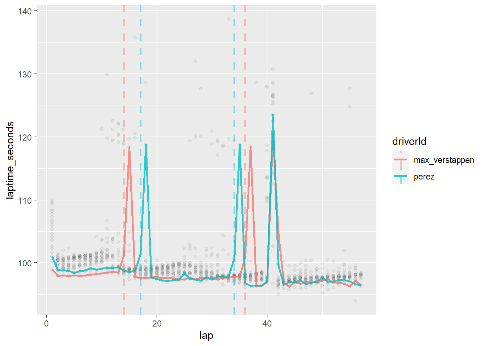
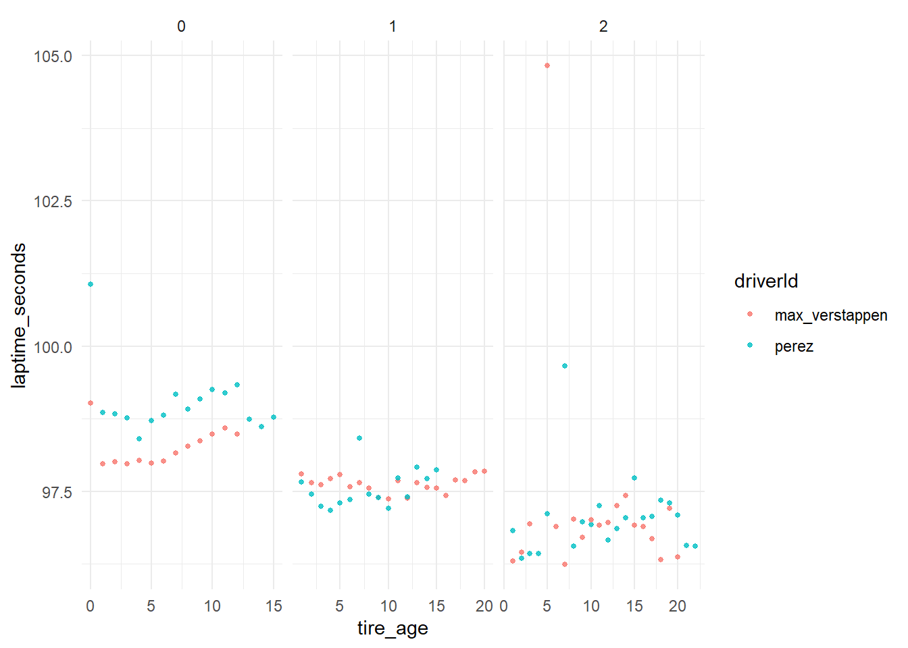

Code
library(tidyverse)
library(lubridate)
library(jsonlite)
library(knitr)Use race lap times to create predictive tire falloff models for each driver, to use live in future races.
Currently, this project is using the Ergast F1 API, and the FastF1 Python Library.
NOTES:
TODO:
Get tire compound data for stints
Add function that flags safety car laps
Normalise lap time some how? First lap = 1 or something?
Extension: use this tire model to create simulated pit stop prediction models/visualisations (using D3.js).
library(tidyverse)
library(lubridate)
library(jsonlite)
library(knitr)Use the following code block to select which race to access.
YEAR = 2023
ROUND = 1To get the lap time data for a given round, we need to access the /laps endpoint of the Ergast F1 API. The total responses from this API will be the number of drivers * the number of laps each driver completes. Since the Ergast F1 API only returns a maximum of 1000 results per query, and each race can have over 1000 driver-laps (i.e. any race where all 20 drivers complete >50 laps), we first need to find out how many total responses there are for a given round. Once we know that, we can calculate how many times we need to access the API in order to get the full set of race data lap times.
First, figuring out how many responses there are in the selected race, and then dividing by the api limit (1000) to calculate the number of iterations required:
# Accesses API and gets value for total rows in full race
laps_total.url <- paste0("https://ergast.com/api/f1/",
YEAR,
"/",
ROUND,
"/laps.json")
# Gets total number of rows in full race data
total_num <- as.numeric(fromJSON(laps_total.url)$MRData$total)
# Number of loop iterations needed to access full race data (api limit = 1000)
iterations_needed <- floor(total_num / 1000)Now that we know how many times we need to access the API, we can acquire all the data using the map_df() function from the tidyverse library:
laptimes_raw.df <- map_df(0 : iterations_needed, function(i){
Sys.sleep(0.5) # API terms limit to 4 calls per second
offset_x = i * 1000 # Generate offset based on i
# URL to get data
t_laptimes.url <- paste0("https://ergast.com/api/f1/",
YEAR,
"/",
ROUND,
"/laps.json?limit=1000&offset=",
offset_x)
# get json from url, navigate json to lap times, then unpack into new df
t_lap.df <- unnest(fromJSON(t_laptimes.url)$MRData$RaceTable$Races$Laps[[1]],
cols = c(Timings))
# Merge onto output dataframe
return(t_lap.df)
})
head(laptimes_raw.df)# A tibble: 6 × 4
number driverId position time
<chr> <chr> <chr> <chr>
1 1 max_verstappen 1 1:39.019
2 1 leclerc 2 1:40.230
3 1 perez 3 1:41.063
4 1 sainz 4 1:41.659
5 1 hamilton 5 1:42.288
6 1 russell 6 1:42.662The ‘number’ column corresponds to ‘lap’, so lets rename it. We will also convert the data into correct types (numeric & datetime)
laptimes_clean.df <- laptimes_raw.df %>%
rename(lap = number, laptime = time) %>%
mutate(lap = as.numeric(lap),
position = as.numeric(position),
laptime_lub = ms(laptime),
laptime_seconds = as.numeric(laptime_lub))
head(laptimes_clean.df)# A tibble: 6 × 6
lap driverId position laptime laptime_lub laptime_seconds
<dbl> <chr> <dbl> <chr> <Period> <dbl>
1 1 max_verstappen 1 1:39.019 1M 39.019S 99.0
2 1 leclerc 2 1:40.230 1M 40.23S 100.
3 1 perez 3 1:41.063 1M 41.063S 101.
4 1 sainz 4 1:41.659 1M 41.659S 102.
5 1 hamilton 5 1:42.288 1M 42.288S 102.
6 1 russell 6 1:42.662 1M 42.662S 103. Ideally we want a variable that denotes the constructor that each driver is driving for. To do this, we will use the standings endpoint to connect the drivers and teams.
# create endpoint api string
driver_constructors.url <- paste0("http://ergast.com/api/f1/",
YEAR,
"/driverStandings.json")
# Access api, parse json, and then unnest into a df
driver_constructors_raw.df <- unnest(fromJSON(driver_constructors.url)$MRData$StandingsTable$StandingsLists$DriverStandings[[1]])Warning: `cols` is now required when using `unnest()`.
ℹ Please use `cols = c(Driver, Constructors)`.Now, select only relevant columns, and convert drivers racing numbers to numeric.
# Remove unneeded info from driver_constructors and rename some variables
driver_constructors_clean.df <- driver_constructors_raw.df%>%
select(-position, -positionText, -points, -wins, -url, -url1) %>%
rename(driverNationality = nationality,
constructorName = name,
constructorNationality = nationality1) %>%
mutate(dateOfBirth = ymd(dateOfBirth),
permanentNumber = as.numeric(permanentNumber))
head(driver_constructors_clean.df)# A tibble: 6 × 10
driverId perma…¹ code given…² famil…³ dateOfBi…⁴ drive…⁵ const…⁶ const…⁷
<chr> <dbl> <chr> <chr> <chr> <date> <chr> <chr> <chr>
1 max_verstapp… 33 VER Max Versta… 1997-09-30 Dutch red_bu… Red Bu…
2 perez 11 PER Sergio Pérez 1990-01-26 Mexican red_bu… Red Bu…
3 alonso 14 ALO Fernan… Alonso 1981-07-29 Spanish aston_… Aston …
4 hamilton 44 HAM Lewis Hamilt… 1985-01-07 British merced… Merced…
5 sainz 55 SAI Carlos Sainz 1994-09-01 Spanish ferrari Ferrari
6 leclerc 16 LEC Charles Leclerc 1997-10-16 Monega… ferrari Ferrari
# … with 1 more variable: constructorNationality <chr>, and abbreviated
# variable names ¹permanentNumber, ²givenName, ³familyName, ⁴dateOfBirth,
# ⁵driverNationality, ⁶constructorId, ⁷constructorNameOne of the key pieces of information we need is when a driver stops in the pits. This is important, both to split up the analysis for each stint, and to derive the age of the tires.
# Generating pitstop api url
pitstops.url <- paste0("http://ergast.com/api/f1/",
YEAR,
"/",
ROUND,
"/pitstops.json?limit=60")
# Creating dataframe from json object
pitstops_raw.df <- fromJSON(pitstops.url)$MRData$RaceTable$Races$PitStops[[1]]
head(pitstops_raw.df) driverId lap stop time duration
1 gasly 9 1 18:18:56 25.885
2 norris 10 1 18:20:31 32.766
3 tsunoda 10 1 18:20:34 25.267
4 bottas 11 1 18:22:06 25.399
5 albon 11 1 18:22:12 25.054
6 hulkenberg 11 1 18:22:21 26.075Convert numbers to numeric type, and drop unneeded columns.
pitstops_clean.df <- pitstops_raw.df %>%
mutate(lap_pitted = as.numeric(lap),
stop_number = as.numeric(stop),
pit_duration_secs = as.numeric(duration),
time_pitted = hms(time)) %>%
select(-time, -duration, -lap, -stop)
head(pitstops_clean.df) driverId lap_pitted stop_number pit_duration_secs time_pitted
1 gasly 9 1 25.885 18H 18M 56S
2 norris 10 1 32.766 18H 20M 31S
3 tsunoda 10 1 25.267 18H 20M 34S
4 bottas 11 1 25.399 18H 22M 6S
5 albon 11 1 25.054 18H 22M 12S
6 hulkenberg 11 1 26.075 18H 22M 21SNow create two new dataframes to denote whether a lap was an in-lap or out-lap, as these laps are slower than ‘regular’ laps.
# Create temp df denoting pit in-laps
pitstops_in.df <- pitstops_clean.df %>%
select(driverId, lap_pitted) %>%
rename(pit_in_lap = lap_pitted) %>%
mutate(is_in_lap = 1)
# Create temp df denoting pit out-laps
pitstops_out.df <- pitstops_in.df %>%
mutate(pit_out_lap = pit_in_lap + 1) %>%
rename(is_out_lap = is_in_lap) %>%
select(-pit_in_lap) %>%
relocate(is_out_lap, .after = pit_out_lap)
head(pitstops_in.df) driverId pit_in_lap is_in_lap
1 gasly 9 1
2 norris 10 1
3 tsunoda 10 1
4 bottas 11 1
5 albon 11 1
6 hulkenberg 11 1head(pitstops_out.df) driverId pit_out_lap is_out_lap
1 gasly 10 1
2 norris 11 1
3 tsunoda 11 1
4 bottas 12 1
5 albon 12 1
6 hulkenberg 12 1First, join the teams to the main dataframe.
laptimes_constructor.df <- laptimes_clean.df %>%
left_join(driver_constructors_clean.df, by="driverId")
head(laptimes_constructor.df)# A tibble: 6 × 15
lap drive…¹ posit…² laptime laptime_…³ lapti…⁴ perma…⁵ code given…⁶ famil…⁷
<dbl> <chr> <dbl> <chr> <Period> <dbl> <dbl> <chr> <chr> <chr>
1 1 max_ve… 1 1:39.0… 1M 39.019S 99.0 33 VER Max Versta…
2 1 leclerc 2 1:40.2… 1M 40.23S 100. 16 LEC Charles Leclerc
3 1 perez 3 1:41.0… 1M 41.063S 101. 11 PER Sergio Pérez
4 1 sainz 4 1:41.6… 1M 41.659S 102. 55 SAI Carlos Sainz
5 1 hamilt… 5 1:42.2… 1M 42.288S 102. 44 HAM Lewis Hamilt…
6 1 russell 6 1:42.6… 1M 42.662S 103. 63 RUS George Russell
# … with 5 more variables: dateOfBirth <date>, driverNationality <chr>,
# constructorId <chr>, constructorName <chr>, constructorNationality <chr>,
# and abbreviated variable names ¹driverId, ²position, ³laptime_lub,
# ⁴laptime_seconds, ⁵permanentNumber, ⁶givenName, ⁷familyNameNext, join the pitstop data
laptimes_constructor_pits.df <- laptimes_constructor.df %>%
left_join(pitstops_in.df,
by = join_by(driverId == driverId, lap == pit_in_lap)) %>%
left_join(pitstops_out.df,
by = join_by(driverId == driverId, lap == pit_out_lap))
head(laptimes_constructor_pits.df)# A tibble: 6 × 17
lap drive…¹ posit…² laptime laptime_…³ lapti…⁴ perma…⁵ code given…⁶ famil…⁷
<dbl> <chr> <dbl> <chr> <Period> <dbl> <dbl> <chr> <chr> <chr>
1 1 max_ve… 1 1:39.0… 1M 39.019S 99.0 33 VER Max Versta…
2 1 leclerc 2 1:40.2… 1M 40.23S 100. 16 LEC Charles Leclerc
3 1 perez 3 1:41.0… 1M 41.063S 101. 11 PER Sergio Pérez
4 1 sainz 4 1:41.6… 1M 41.659S 102. 55 SAI Carlos Sainz
5 1 hamilt… 5 1:42.2… 1M 42.288S 102. 44 HAM Lewis Hamilt…
6 1 russell 6 1:42.6… 1M 42.662S 103. 63 RUS George Russell
# … with 7 more variables: dateOfBirth <date>, driverNationality <chr>,
# constructorId <chr>, constructorName <chr>, constructorNationality <chr>,
# is_in_lap <dbl>, is_out_lap <dbl>, and abbreviated variable names
# ¹driverId, ²position, ³laptime_lub, ⁴laptime_seconds, ⁵permanentNumber,
# ⁶givenName, ⁷familyNameWe need to replace the NA values in is_in_lap and is_out_lap with 0s.
laptimes_constructor_pits.df <- laptimes_constructor_pits.df %>%
mutate(is_in_lap = ifelse(is.na(is_in_lap), 0, 1),
is_out_lap = ifelse(is.na(is_out_lap), 0, 1))
head(laptimes_constructor_pits.df)# A tibble: 6 × 17
lap drive…¹ posit…² laptime laptime_…³ lapti…⁴ perma…⁵ code given…⁶ famil…⁷
<dbl> <chr> <dbl> <chr> <Period> <dbl> <dbl> <chr> <chr> <chr>
1 1 max_ve… 1 1:39.0… 1M 39.019S 99.0 33 VER Max Versta…
2 1 leclerc 2 1:40.2… 1M 40.23S 100. 16 LEC Charles Leclerc
3 1 perez 3 1:41.0… 1M 41.063S 101. 11 PER Sergio Pérez
4 1 sainz 4 1:41.6… 1M 41.659S 102. 55 SAI Carlos Sainz
5 1 hamilt… 5 1:42.2… 1M 42.288S 102. 44 HAM Lewis Hamilt…
6 1 russell 6 1:42.6… 1M 42.662S 103. 63 RUS George Russell
# … with 7 more variables: dateOfBirth <date>, driverNationality <chr>,
# constructorId <chr>, constructorName <chr>, constructorNationality <chr>,
# is_in_lap <dbl>, is_out_lap <dbl>, and abbreviated variable names
# ¹driverId, ²position, ³laptime_lub, ⁴laptime_seconds, ⁵permanentNumber,
# ⁶givenName, ⁷familyNameThe first lap of a race is significantly slower than the rest of the race, especially for cars who qualified further down the field. This could be a useful indicator.
laptimes_constructor_pits.df <- laptimes_constructor_pits.df %>%
mutate(is_first_lap = ifelse(lap == 1, 1, 0))The previous lap time will probably be very predictive of subsequent laptimes. We will check the autocorrelation plots for the model to ensure this, but we can easily create the variable now
laptimes_constructor_pits.df <- laptimes_constructor_pits.df %>%
arrange(driverId, lap) %>%
mutate(prev_laptime_seconds = ifelse(is_first_lap != 1,
lag(laptime_seconds),
NA)) %>%
arrange(lap, position)TODO:
Safety cars occur when there’s been an incident on track (crashed or broken down car, for example). These lap times are significantly slower than normal ‘racing’ laps.
Therefore we need to flag if a lap is under a safety car.
If laptimes are more 10% slower than median lap times (for a driver?), then flag them as safety car laps
NOTE: This might need to be re-worked as it may not perfectly flag yellow flags
# if laptime > median(laptimes) AND not in/out lap ()
sc_cutoff <- median(laptimes_constructor_pits.df$laptime_seconds) * 1.1At the moment, I am assuming all cars are starting on new tires, as there’s no way for me to track if a specific set of tires has been used earlier in the weekend.
This will break if someone pits and doesnt change tires (extremely unlikely that this happens)
tire_age.df <- laptimes_constructor_pits.df %>%
arrange(driverId, lap) %>%
mutate(tire_age = 1) %>%
group_by(driverId) %>%
mutate(stint = cumsum(is_out_lap)) %>%
ungroup() %>%
group_by(driverId, stint) %>%
mutate(tire_age = cumsum(tire_age)-1) %>%
ungroup() %>%
arrange(lap, position) %>%
relocate(tire_age, .after = lap)
head(tire_age.df)# A tibble: 6 × 21
lap tire_…¹ drive…² posit…³ laptime laptime_…⁴ lapti…⁵ perma…⁶ code given…⁷
<dbl> <dbl> <chr> <dbl> <chr> <Period> <dbl> <dbl> <chr> <chr>
1 1 0 max_ve… 1 1:39.0… 1M 39.019S 99.0 33 VER Max
2 1 0 leclerc 2 1:40.2… 1M 40.23S 100. 16 LEC Charles
3 1 0 perez 3 1:41.0… 1M 41.063S 101. 11 PER Sergio
4 1 0 sainz 4 1:41.6… 1M 41.659S 102. 55 SAI Carlos
5 1 0 hamilt… 5 1:42.2… 1M 42.288S 102. 44 HAM Lewis
6 1 0 russell 6 1:42.6… 1M 42.662S 103. 63 RUS George
# … with 11 more variables: familyName <chr>, dateOfBirth <date>,
# driverNationality <chr>, constructorId <chr>, constructorName <chr>,
# constructorNationality <chr>, is_in_lap <dbl>, is_out_lap <dbl>,
# is_first_lap <dbl>, prev_laptime_seconds <dbl>, stint <dbl>, and
# abbreviated variable names ¹tire_age, ²driverId, ³position, ⁴laptime_lub,
# ⁵laptime_seconds, ⁶permanentNumber, ⁷givenNameLap times:
redbull_pits <- laptimes_constructor_pits.df %>%
filter(constructorId == "red_bull", is_in_lap == 1)
redbull_times.df <- laptimes_constructor_pits.df %>%
filter(constructorId == "red_bull")
ggplot() +
geom_point(aes(x=lap, y = laptime_seconds, group = driverId),
data=laptimes_constructor_pits.df,
alpha = 0.05) +
geom_line(aes(x=lap, y = laptime_seconds, group = driverId, colour = driverId),
data=redbull_times.df,
alpha = 0.8, size = 1) +
geom_vline(aes(xintercept = lap, color = driverId), data = redbull_pits, lty = 2, alpha = 0.4, size = 1)Warning: Using `size` aesthetic for lines was deprecated in ggplot2 3.4.0.
ℹ Please use `linewidth` instead.
tire_age.df %>%
filter(constructorId == "red_bull",
laptime_seconds < sc_cutoff,
is_in_lap == 0) %>%
ggplot(aes(x = tire_age, y = laptime_seconds, group = driverId, color = driverId)) +
geom_point(alpha = 0.8, size = 1) +
# geom_line(stat = "smooth", se = F, size = 1, alpha = 0.4) +
facet_wrap(vars(stint), scales = "free_x") +
theme_minimal()